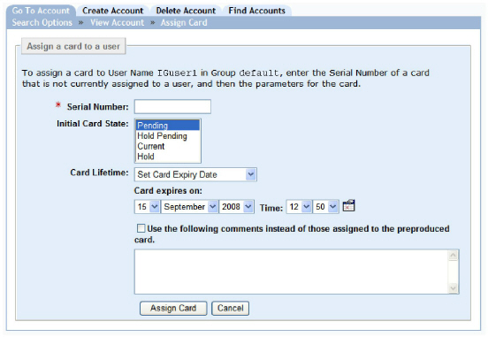
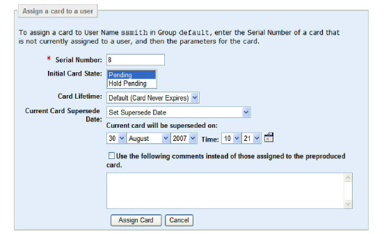
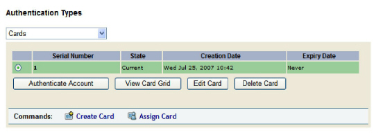
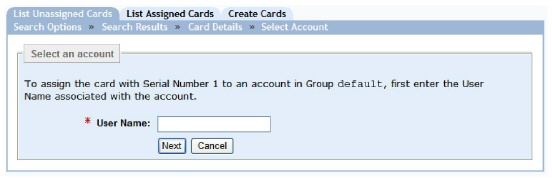
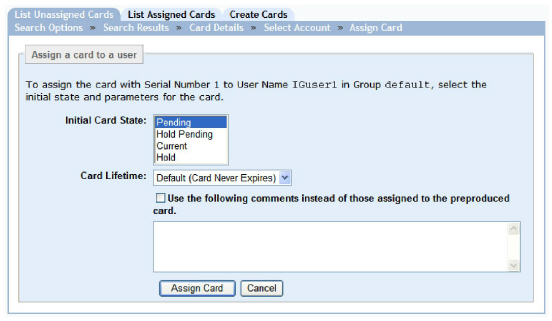

|
IdentityGuard Server 13.0 Administration Guide |
|
IdentityGuard Server 13.0 Administration Guide |
After you distribute preproduced grid cards to your users, you need to assign a grid card to each user when the users register. When you do so, you verify:
● the user’s identity
● the serial number on the grid card
When you assign a grid card to a user, Entrust IdentityGuard automatically moves it from the preproduced (unassigned) list to the assigned list.
Note: Always assign grid cards to users (and vice versa) from the primary server. The preproduced grid card repository resides on the hard disk of the primary server, and is not available to the replica servers.
If a user has requested a grid card through Entrust IdentityGuard Self-Service Module, do not assign a grid card to the user. When a user requests a grid card through the Self-Service Module, Entrust IdentityGuard server assigns a grid card to the user.
To complete the procedures in this section, administrators must have the correct role permissions. See Card permissions.
This section contains the following procedures:
● To assign a user a preproduced grid card
● To assign a preproduced grid card to a user
● To assign preproduced grid cards to multiple users using bulk operations
To assign a user a preproduced grid card
1. Log in to the Entrust IdentityGuard Administration interface as the administrator.
 On the
Windows computer where Entrust IdentityGuard is installed
On the
Windows computer where Entrust IdentityGuard is installed
2. On the main menu, click User Accounts.
3. Find a specific user in one of two ways:
● Use the Go To Account tab (see Search for information about a specific user).
● Use the Find Accounts tab (see Searching for user information).
4. Under Authentication Types, click Cards, then click Assign card.
The Assign Card page appears.

5. In the Serial Number field, type an existing grid card serial number. The serial number must be a serial number for an unassigned grid card belonging to the user’s group.
6. In the Initial Card State list, select a state for the new grid card. By default, the grid card is created in the pending state. For more information about grid card states, see Grid card and token state overview.
7. In the Card Lifetime list, select one of the following:
● Default — This option sets the grid card’s lifetime to the default lifetime set in the grid card policy category (see Configuring grid card policies). The policy setting is shown in parentheses beside Default. You can change this policy on a per user basis by selecting other options in the Card Lifetime list.
● Set Card Lifetime — This option lets you set a period of time the grid card can be used before expiring. Type a numerical value in the text field, then select a time value from the drop-down list (hours, days, or months).
● Set Card Expiry Date — This option lets you set a specific day and time when the grid card expires. Using the drop-down lists, select a date (day, month, year), then select a time (hour and minute). Alternatively, you can click the calendar icon to select a date.
● Card Never Expires — No expiry date exists.
8. If this user already has a grid card in the Current state, you also see the Current Card Supersede Date. Select the time by which your user must use the new grid card.

9. (Optional) Type any comments.
10. Click Assign Card.
The Account Information pane appears and the grid card is listed under Authentication Types.

You can now:
● Authenticate the user with this grid card, if the user contacts you for verification (see Authenticate grid card users).
● Edit the grid card information as required (see Administering assigned grid cards).
To assign a preproduced grid card to a user
1. Log in to the Entrust IdentityGuard Administration interface as the administrator.
2. On the main menu, click Cards.
3. From the Cards page, click the List Unassigned Cards tab.
4. Search for the grid cards to assign. See Find unassigned grid card information.
5. On the Search Results page, click the serial number of the grid card you want to assign.
The Card Details page appears.
6. On the Card Details page, click Assign Card.
The Select Account page appears.

7. In the User Name field, type the user name of the user you want to assign the grid card to.
8. Click Next.
The Assign Card page appears.

9. In the Initial Card State list, select a state. For more information about grid card states, see Grid card and token state overview.
10. In the Card Lifetime list, select one of the following:
● Default — This option sets the grid card’s lifetime to the default lifetime set in the grid card policy category (see Configuring grid card policies). The policy setting is shown in parentheses beside Default. You can change this policy on a per user basis by selecting other options in the Card Lifetime list.
● Set Card Lifetime — This option lets you set a period of time the grid card can be used before expiring. Type a numerical value in the text field, then select a time value from the drop-down list (hours, days, or months).
● Set Card Expiry Date — This option lets you set a specific day and time when the grid card expires. Using the drop-down lists, select a date (day, month, year), then select a time (hour and minute). Alternatively, you can click the calendar icon to select a date.
● Card Never Expires — No expiry date exists.
11. In the Current Card Supersede Date drop-down list, select one of the following:
Note: The Current Card Supersede Date option only appears when the user has a current active grid card. This option provides the time remaining for a superseded grid card. For an explanation of superseded grid cards, see Unassigned, deleted, valid, active, expired, and superseded grids.
● Default — This option sets the superseded grid card’s lifetime to the default superseded grid card lifetime set in the grid card specification policy. To change the default superseded grid card lifetime value in the policy, see Configuring grid card policies.
● Set Time When superseded — This option lets you set a period of time the superseded grid card can be used before expiring. Type a numerical value in the text field, then select a time value from the drop-down list (hours, days, or months).
● Set Supersede Date — This option lets you set a specific day and time when the superseded grid card expires. Using the drop-down lists, select a date (day, month, year), then select a time (hour and minute). Alternatively, you can click the calendar icon to select a date.
● Current Card Will Not Be superseded — The superseded grid card never expires.
12. To add a new comment, select Use the following comments instead of those found in the preproduced card, then type the comment in the box (2048 maximum character limit). This comment overrides any comment that was added to the grid card when it was created.
13. Click Assign Card.
To assign preproduced grid cards to multiple users using bulk operations
1. Create a bulk file. See Create a bulk file.
2. Log in to the Administration interface.
3. On the main menu, click Bulk Operations.
The Bulk Operations page appears.
4. Click the Bulk Operation tab.
5. Click the Browse button to locate the bulk file.
6. In the Operation to Perform drop-down list, select Assign cards to users.
7. From the Halt Processing drop-down list, select the number of errors to allow before processing stops due to too many errors.
For more information about bulk file options, see Perform bulk operations in the Administration interface.
8. Click Perform Bulk Operation.
The Bulk Operation in Progress page appears. The size of your bulk operation directly affects the time the operation takes to process. This page indicates the initial status of the operation.
9. (Optional) While Entrust IdentityGuard processes the bulk file, you can do the following:
● To view the current status of the bulk operation, click Update Results. (The Results page is also updated automatically every 10 seconds.)
● To cancel the bulk operation, click Cancel Operation.
Note: If you cancel a bulk operation, Entrust IdentityGuard keeps all changes it made while it processed the bulk file. You cannot undo a bulk operation. See Limitations of bulk operations for more information.
When Entrust IdentityGuard completes the bulk operation, the Results page appears.
10. Click Done.